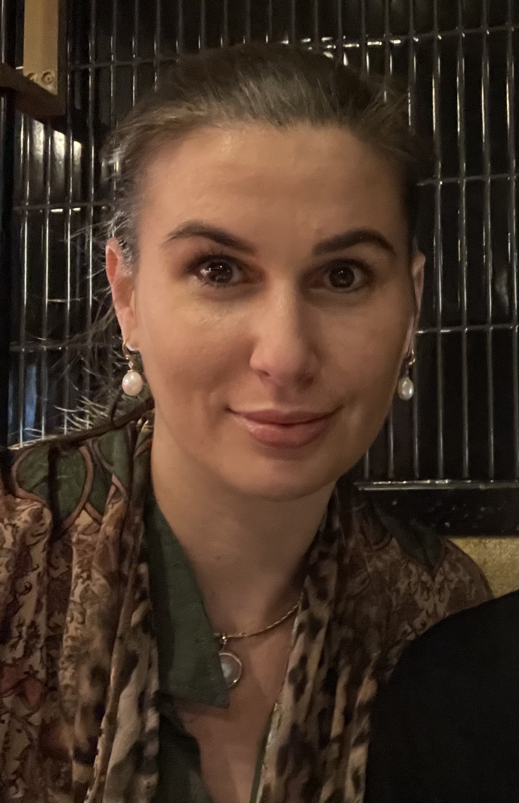

About Me

Studies and Work experience
- 1 month internship at Highway Adovcates organising a new website and industry show marketing materials.
- Attended IndOz 2021 at Southbank, Brisbane.
- Completed the Intermediate Indonesian language course delivered intensively by UKSW, Salatiga, Indonesia.
- Selected as student representative to speak during closing ceremony of intensive language course at UKSW, Salatiga, Indonesia.
Studying Bachelor of Laws, Bachelor of Economics and a Diploma of Languages in Indonesian at University of Queensland.
| Accounting for Decision Making | High Distinction |
| Introductory Microeconomics | High Distinction |
| Introductory Indonesian B | High Distinction |
| Introduction to Law | High Distinction |
| Contract B | High Distinction |
| International Macroeconomics | Distinction |
| Australian Economic History | Distinction |
| Introductory Macroeconomics | Distinction |
| Tools of Economic Analysis | Distinction |
| Macroeconomic Theory | Distinction |
| Economics of Globalisation | Distinction |
| Introductory Indonesian A | Distinction |
| Introductory French | Distinction |
| Statutory Interpretation | Distinction |
| Constitutional Law | Distinction |
| Criminal Law | Distinction |
| Administrative Law | Credit |
| Quantitative Economics and Business Analysis | Credit |
| Health Economics | Credit |
Languages
- English (native)
- Indonesian (Intermediate)
- French (Beginer)
- Arabic(Beginer)
Contact Details
- 0411 080 051